Next: Construction of the Fluid
Up: A counterexample to the
Previous: Outline of the Proof
We will not prove the smoothness of solution to (1.7);
it can be done in a very standard way, using the estimates to parabolic
equations given for example in [5].
Let us only summarize the main result
here. This will show that the function 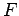 described in
Lemma 2.2 is continuous on any compact subset of
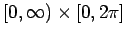.
Lemma 3.1
Let
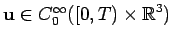 for some  . Then,
in the class of functions
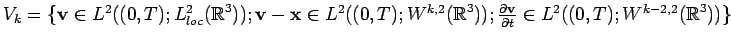, 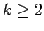, there
exists exactly one solution to (1.7).
Moreover, this solution
is smooth, that is, in
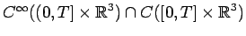,
and
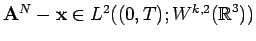 for any
. Then,
in the class of functions
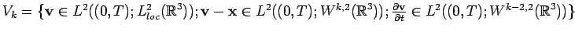, 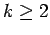, there
exists exactly one solution to (1.7).
Moreover, this solution
is smooth, that is, in
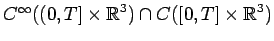,
and
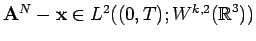 for any  . Furthermore the solution depends smoothly upon
the choice of 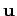.
. Furthermore the solution depends smoothly upon
the choice of 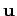.
Remark 3.1 Note that if belongs to
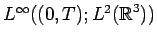
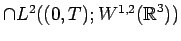
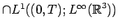 (the usual information about a weak solution to the
Navier-Stokes equations),
then only
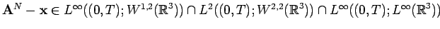 and
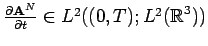. The proof is essentially the same as the proof of Lemma
3.1 using [
5] and is left as an exercise.
Lemma 3.2
There exists an interval 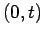 such that for and 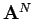 smooth as in
Lemma 3.1, is a smooth solution to (1.8).
Proof: The existence of the solution can be shown using the Galerkin
method combined with standard a priori estimates. We leave the details
of the proof to the reader as an exercise.
width7pt height7pt depth0pt
Now, on the time interval from Lemma 3.2 we see that
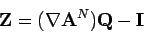
obeys the equation (see [2])
in
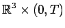 with the initial condition
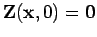. Since,
for
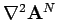 and
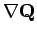 bounded, there exists the unique solution to
(3.1), we have
 and thus
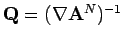 pointwise.
and thus
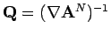 pointwise.
Also, we are now in a position to prove Lemma 2.1. Since
(1.7)
are uniquely solvable, it follows that
the solution is axisymmetric and hence we can apply the following result.
Lemma 3.3
Let
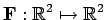 be a vector field which is of the
class 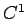 on some neighborhood of the origin and, written in polar
coordinates, 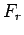 and 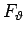 are independent of 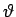. Then
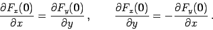
Proof:
Denote 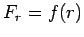 and
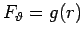. Then we get
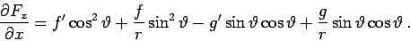
Since
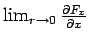 exists, necessarily
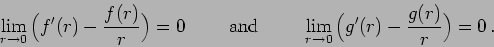
Thus
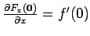. Next
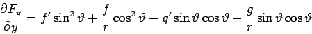
and also
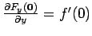. Analogously we get that
 and
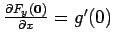.
The lemma is proved. width7pt height7pt depth0pt
and
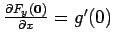.
The lemma is proved. width7pt height7pt depth0pt
Next: Construction of the Fluid
Up: A counterexample to the
Previous: Outline of the Proof
Stephen Montgomery-Smith
2002-10-25